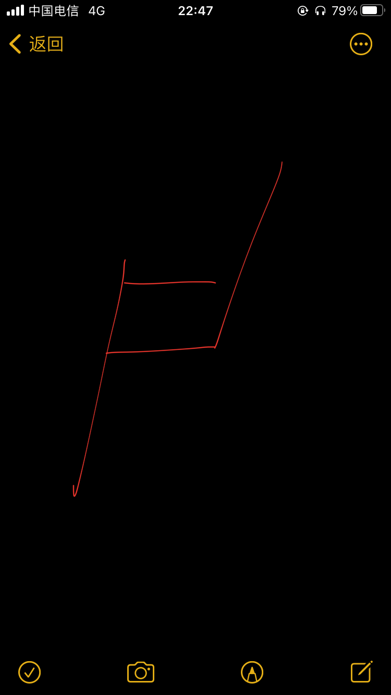

After Mrs. Zhou and Bob Wu mentioned the grouping requirement in class, six students from different professional backgrounds formed a team: electrical engineering's Chao Zhang, computer science's Weilin, digital media's Yo Zhang, and industrial design's Qiaoqiao, Dashuang, and Mingyue.
在周老师和Bob课上提到分组的要求后，来自不同专业背景的六位同学组成了一个团队：电气工程的张超、计算机科学的伟麟、数字媒体的张悠，以及工业设计的巧巧、大爽、明月。
On the evening of September 26, 2020, all members of the group gathered in dormitory 806 for the first workshop.
2020年9月26日晚，小组全体成员齐聚806宿舍，进行了第一次研讨会。

The night before, group leader Zhang Chao had planned the discussion topic and posted it to the group as follows.
1. get to know each other and talk about the skill points that each one is good at.
2. Discuss the approach to the website and the division of labour.
3. Discuss everyone's opinions about the final project.
前一天晚上，组长张超就已规划了讨论主题，并发布在了群里：
1.大家相互了解一下，说一说各自擅长的技能点；
2.讨论搭建网站的方式以及各自的分工；
3.讨论大家对于final project的看法。
After a brief exchange of pleasantries, everyone showed their works, graduation designs and other achievements one after another, and the scene was once out of control, becoming a large site of mutual praise. After the group members got to know each other, they started to assign the task of building the website. Combined with everyone's professional advantages, as well as their respective National Day holiday arrangements, after some discussion, it was decided that a group of two people, each output a set of web interface (including home page, team member introduction page and project progress page), deadline is October 3, and further discussion. The next step is to learn software knowledge and find kinetic case studies.
简单寒暄后，大家相继展示了自己的作品、毕业设计等成果，场面一度不受控制，成为大型互夸现场。组内成员相互了解后，便开始了搭建网站的任务分配。结合大家的专业优势，以及各自国庆假期安排，一番讨论后，决定两人一组，各产出一组网页界面（包含首页、组员介绍页和项目进展页），deadline是10月3号，再进一步讨论。其次是要学习软件知识、找找动效案例。
As the requirements of the final subject is not very clear, we just threw out a scope: first decided to do partial visual arts or partial practical technology products, still in the planning.
由于最终课题的要求还不是很明晰，我们只是抛出了一个范围：先决定是做偏视觉艺术的or偏实用技术的产品，尚在计划中。
Just as the discussion was coming to an end, the conversation turned to the group's name and logo. Zhang Chao said he now has a general idea, "wasn't there F4 before, I thought of the six of us, that is, F6......" said as he opened the memo to show us the random drawing.
就在讨论快要接近尾声的时候，话锋一转到了组名、logo上。张超说他现在有一个大致想法，“之前不是有F4吗，我想到我们六个人，就是F6……”边说边打开了备忘录的随手画向我们展示。
"This pattern reminds me of the reduction charm in sheet music!" Qiaoqiao said, "It just so happens that the teacher in the cultural composition class mentioned a phrase, 'Go back to the origins of design,' and the group name could be called the Reduction Group ......." Or, retroactively?" "Well, it could also be called the Origin Group, or the Singularity ......."
“这个图案让我想起了乐谱里的还原符！”巧巧说，“正好文化构成课里老师提到过一句话，‘回到设计的本源’，小组名可以叫还原组……”“或者叫，溯源？”“那，也可以叫原点组，或者奇点……”
There was a lively discussion in the group, with free brainstorming for common ground. The final group was called the Restoration Group and was given a triple brand story.
1. The symbol of music reduction♮, group name reduction, symbolizes the return to the origin of design.
2. Combined with the motto of Zhejiang University, "Seeking to be - Reduction" is the process of dynamic exploration, not the static result of the origin, which means that every time we work is closer to the original appearance of the exploration, step by step forward.
3. So ♮ as the group logo, including the initials of the six of us (Z, D, H, L), we work together, unity and win-win.
组内展开了热烈的讨论，大家自由脑暴，求同存异。最终确定的组名为还原组，并赋予了其三重品牌故事：
1.音乐的还原符号♮，组名为还原，象征着回到设计的本源。
2.与浙大校训相结合，求是-还原，是动态探索的过程，而非原点的静态结果，寓意我们每一次的工作进展都是更加接近事物本来面貌的探索，一步步地向前递进。
3.以还原符♮作为小组logo，包含了我们六个人的姓氏首字母（Z、D、H、L），大家同心协力、团结共赢。
Attachment: Zhang Chao, Weilin/Zhang You, Dashuang/Qiaoqiao, Mingyue Each output a group of web interface design.
附本次组内分工名单：张超、伟麟/张悠、大爽/巧巧、明月 各产出一组网页界面设计